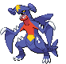

-
Gardevoir
- Psíquico
- Fada
Gardevoir é capaz de ver o futuro usando seus poderes psíquicos. Seus poderes telecinéticos permitem-lhe levantar objetos e apoiar-se sem sentir a força da gravidade. O poder de Gardevoir atinge seu pico ao proteger seu treinador, a quem ele protegerá com sua vida, sendo capaz de criar pequenos buracos negros e distorcer dimensões. é dito que o chifre no peito de Gardevoir é uma manifestação física do coração deste Pokémon.
-
Infernape
- Fogo
- Lutador
Este Pokémon ágil pratica um tipo único de arte marcial que envolve todos os seus membros, uma vez que se envolve em chamas e usa socos e chutes de fogo. Esta forma de batalha é comparável à dança. Infernape também é conhecido por possuir velocidade e agilidade incomparáveis. Diz-se que a chama de Infernape também nunca se apaga.
-
Togekiss
- Fada
- Voador
Togekiss é conhecido mundialmente como portador de bênçãos, sendo retratado em amuletos de boa sorte desde os tempos antigos. Diz-se que Togekiss traz boa sorte simplesmente em virtude de sua existência. No entanto, eles só aparecem em lugares pacíficos e nunca foram testemunhados em qualquer lugar perto de conflitos ou tumultos, tornando seus recentes avistamentos excepcionalmente raros. Ele compartilha muitos dons gentis e doces bênçãos quando visita lugares pacíficos ou vê pessoas que evitam conflitos e respeitam os direitos dos outros. No entanto, Togekiss é um lutador capaz.
-
Rotom-Wash
- Elétrico
- Água
Rotom tem a capacidade de entrar e controlar aparelhos. Eles normalmente usam suas habilidades para fazer travessuras, muitas vezes usando os itens domésticos que possuem para puxar brincadeiras em pessoas desavisadas. Apesar disso, alguns Rotom passaram a habitar eletrônicos com a intenção de ajudar os outros. Algumas dessas formas permitem que a Rotom fale línguas humanas e demonstrem que o Rotom é altamente inteligente. Esse pokémon tende a residir em edifícios abandonados.
-
Garchomp
- Dragão
- Terra
Garchomp pode voar a uma velocidade incrível para pegar sua presa, sendo capaz de voar tão rápido quanto um jato, derrubando árvores com suas lâminas de vento, uma visão magnífica para testemunhar. É capaz de se mover tanto no ar quanto no subsolo. Ele se aproveita de Pokémon de pássaro e é conhecido por comer bandos inteiros deles inteiros. Depois de pegar presas, ele retorna à sua toca antes que seu corpo possa esfriar. As escamas finas em seu corpo reduzem o arrasto para um voo mais fácil, e suas bordas afiadas também servem para ferir os oponentes que o atacam diretamente. Ele pode usar suas protuberâncias como sensores para encontrar presas distintas. Garchomp vive em regiões montanhosas, vulcânicas e boreais, e normalmente habita no subsolo. No entanto, raramente é visto na natureza. Garchomp é descrito como tendo uma natureza selvagem, exigindo extrema cautela caso alguém o encontre.
-
Dragonite

- Dragão
- Voador
Dragonite é capaz de voar mais rápido do que a velocidade do som, sendo capaz de circundar o globo em dezesseis horas. Um Pokémon bondoso com inteligência humana, Dragonite mostra sinais de altruísmo: é dito para salvar os seres humanos de afogamento em naufrágios ou quando estão perdidos. No entanto, ele vai em uma fúria incontrolável e destrutiva se o seu ambiente está ameaçado. Dragonite geralmente se acalma e fica satisfeito depois de esmagar qualquer coisa que o irritou em pedacinhos. Dragonite tem sido referido como o "guardião do lado" e o "Sea Incarnate"; como tal, existem muitos navios com figuras de cabeças decoradas com o visual de Dragonite. O poder do Dragonite é capaz de afetar o tempo. Dragonite é muito raro na natureza, normalmente vivendo perto do mar. Alguns afirmam que há uma ilha em algum lugar no oceano que só o Dragonite habita.